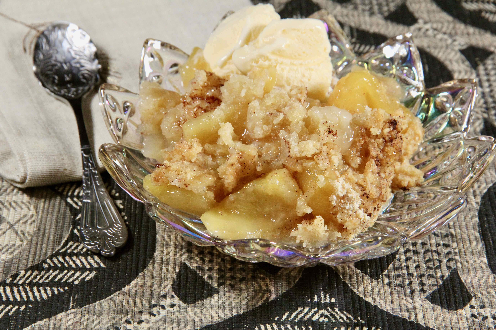

Apple Crumble Recipe
Nana's Apple Crumble
Home Page
Ooey Gooey Goodness!

A family favorite, this apple crumble was originally my grandmother Hazel's recipe which my mom made on a regular basis.
She would make two at a time to take to sick or shut-in friends, or to potlucks.
There is never any left. Serve warm with French vanilla yogurt.
Ingredients to make:
- 7 large Cortland apples-peeled, cored, and sliced
- 1 cup white sugar
- 1 tablespoon ground cinnamon
- 1 cup all-purpose flour
- 1/4 cup brown sugar
- 1/3 cup unsalted butter, cubed
The steps to make the recipe:
- Preheat the oven to 350 degrees F (175 degrees C).
- Spread apples in an even layer in a deep dish pie plate or 8-inch square glass casserole dish.
Cover with white sugar, then top with cinnamon.
- Combine flour and brown sugar for topping in a bowl. Add butter and cut in with a pastry blender.
Spread topping evenly over apple mixture and pat down.
- Bake in the preheated oven until apple mixture is bubbling and topping is browned, about 55 minutes.
Note:You will probably want to double this recipe for larger groups.
If you do, you should increase the butter and the brown sugar in the topping by a tablespoon each.
Bake in a 9x12-inch casserole dish.